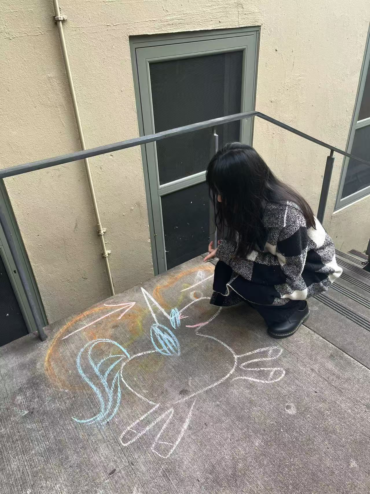

About Me
Hi, I’m Serena. I grew up in Beijing, China, and am currently a senior at Whitman College, double majoring in Economics–Mathematics and Music Produciton. I’m interested in storytelling through data and plan to pursue a Master’s degree in Business Analytics.
Over my four years in College, I have built experience in analytical tools such as Python, R, SQL, and Excel, and have worked on research projects that strengthened both my analytical and writing skills.
Music is an important part of my life. I enjoy playing and making music. I play guitar, piano, and a little bit of drums. I am currently working with digital work stations to produce original tracks and build my music portfolio :)
Welcome to my personal portfolio. This site will showcase my projects, research, and work that reflect my interests and growth.

Projects
Interactive Economic Website Development
A multi-user online interactive game simulating real-world economic decision-making. Each player is embedded in a unique social network, where their final payoff depended only on connected players’ choices— allowing students to experience and understand the concept of public goods in practice.
Flappy Bird Game
A recreation of the classic Flappy Bird game, built using Python and Pygame.
Child Mortality Rate Analysis
Child mortality rate is defined as the probability of a child dying before reaching age five. It remains a key indicator of a country’s public health conditions and broader socio-economic development. In this project, we analyze historical trends in child mortality and explore whether economic development, measured by GDP per capita, is associated with lower child mortality across countries. Moreover, we analyze the causes of child mortality and the relationship between child mortality and poverty in different countries.
Research
The Accounting Needs and Software Used by Non-profit Organizations
Research Question: What are the accounting needs of non-profit organizations and what software are available to meet these needs?
Overview: Nonprofit organizations (NPOs) are private entities that operate for collective social benefit, typically directed at a particular group of clients or beneficiaries [Hall and O’Dwyer, 2017]. Unlike commercial organizations, which aim to maximize their monetary profit, nonprofit organizations aim to achieve social objectives rather than generate profit. Thus, there is no standardized financial metric to assess their performance [Hall and O’Dwyer, 2017]. Due to limitations in measurement standards, NPOs face challenges in accounting for funds, allocating resources, and tracking donations and grants.
Collaboration: This research was conducted in collaboration with professor Veeramoothoo and fellow student researcher Carly Martin at Whitman College. We evaluated several accounting software solutions used by nonprofits—including QuickBooks for Non-Profits, Sage Intacct, Blackbaud Financial Edge NXT, Aplos, Zoho Books, and Xero—and compared their pricing and functionalities.
The resulting paper provides guidance for thousands of small nonprofit organizations seeking to choose accounting software that meets their operational and reporting needs.
Music🎸🎹🎵
Music Zine: September 24, 1991
This music zine explores September 24, 1991, one of the greatest release date in modern music history. Through close analysis of four albums released on the same day, Nevermind, Blood Sugar Sex Magik, The Low End Theory, and Trompe le Monde, it examines how shifting media, culture, and musical language reshaped the idea of the mainstream.
Research Paper on Allegretto in C-sharp minor by Fanny Hensel Mendelssohn
Overview: This paper explores Fanny Hensel’s piano piece Allegretto in C-sharp minor (op.4, no.2), which belongs to the genre of Lied ohne Worte (Song Without Words). The analysis situates the piece within the context of Hensel’s personal experiences as well as broader nineteenth-century musical aesthetics.
If You're Too Shy (Let Me Know) - The 1975, Production Breakdown
A detailed breakdown and analysis of individual tracks and the production techniques used.
Contact
email: serenalim567@gmail.com